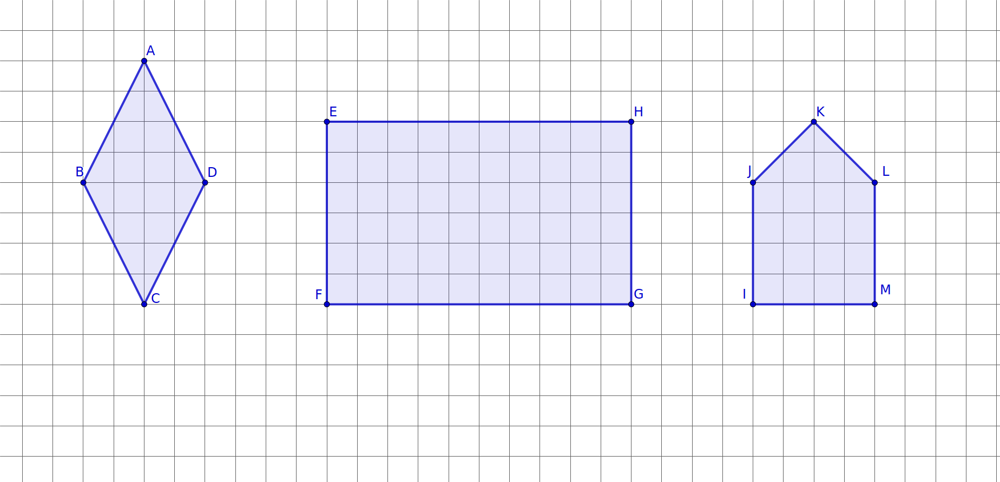

Have you ever studied a tiling of a floor or a pattern on a quilt? Often a repetition of similarly shaped tiles is used for artistic effect. In this section, we will define a regular polygon and explore tilings that consist only of regular polygons. Is there a limit to the number of tilings that can created in this way?
Subsection2.4.1Regular Polygons
We begin by defining what it means for a polygon to be regular.
Definition2.4.1.
A polygon is a regular polygon if all of its sides and all of its angles are congruent.
Checkpoint2.4.2.Check Your Understanding!
Each shape in Figure 2.4.3 is not a regular polygon. Identify the part(s) of the definition of regular polygon that fail for each figure.

Figure2.4.3.Nonregular Polygons
(a)
Explain why rhombus \(ABCD\) is not regular.
Answer.
Not all angles are congruent.
(b)
Explain why rectangle \(EFGH\) is not regular.
Answer.
There are pairs of noncongruent sides.
(c)
Explain why pentagon \(IJKLM\) is not regular.
Answer.
Not all angles are congruent. The sides also vary in length.
Subsection2.4.2Regular Tilings
In Exploration 1.1.1, we created a tiling of a square using tetrominoes. In this section, we will consider tilings of the plane. Since the plane continues infinitely, we will not be able to create a complete tiling in a finite space or finite time span. Instead, we sketch enough of the tiling to determine whether a tiling is possible. We ask ourselves whether we can continue the pattern vertically, horizontally, and diagonally without creating gaps or irregularities.
Definition2.4.4.
A tiling is a collection of closed polygons that cover a plane (continuing infinitely in all directions) with no gaps and no overlaps. A monohedral tiling is a tiling that uses only one shaped tile while a regular tiling is a monohedral tiling that uses a single regular polygon as its tile. In a regular tiling, each side of a polygon will line up perfectly with a side of an adjacent c.
Exploration2.4.1.Regular Tilings.
This activity may be completed using physical tiles or in the interactive applet below. Be sure to save a record of your designs by tracing, photography, or screenshots. Some of the computations will also be used later in this section, so you are encouraged to keep an accessible record of your work for future reference.
provides regular \(n\)-gons for \(3\leq n\leq 8\text{.}\) These are the top six shapes provided in Figure 2.4.5. Simply drag the shape from the left into the whiteboard area and it will make a new copy. Rotate the polygon using the dotted stem and move it by clicking on the interior and dragging. For \(n\)-gons with \(n\gt 8\text{,}\) use the nonagon at the bottom. Pull on the dotted vertex to change the number of sides. With the new \(n\)-gon selected, you can now use the duplicated sheet icon on the flip/cut/... menu to make copies of your \(n\)-gon. Undo, redo, reset, and extract buttons are provided on the right. The blue icon will enable you to open the interactive in the PolyPad application and work full screen.
Select a single regular polygon, make copies of it as needed, and use it to construct a regular tiling. Construct enough of the tiling to convince others that the tiling can continue to tile the plane, upward and downward, to the left and the right, with no gaps and overlaps.
(b)
Experiment with equilateral triangles, squares, regular pentagons, regular hexagons, and other regular \(n\)-gons to determine which can be used to create a regular tiling and which cannot. What do you think will happen with regular polygons with more than eight sides? Why?
Exploration2.4.2.Vertex Angle Measure.
Perhaps you noticed that the vertex angle measure plays a critical role in determining whether a regular polygon can be used to create a regular tiling. The steps in this exploration will lead you to determine the measure of the vertex angle of a regular pentagon. This technique will lead to a formula for computing the measure of the vertex angles for any regular \(n\)-gon.
Use the fact that the pentagon is divided into triangles.
(d)
Hint.
\(m\angle A = m\angle B = m\angle C = \) ...
(e)
Some of what you found, but not all, will be true for all convex pentagons. What results about angle measure will also hold for non-regular convex pentagons? What will be different?
(f)
Use your work from the previous task to complete the row for regular pentagon in the table below. Repeat this procedure for squares, regular hexagons, regular octagons, and regular decagons: First draw diagonals from a single vertex to dissect the polygon into triangles, next use the triangles to determine the total vertex angle measure, and then determine the measure of each angle. In the final row, \(n\) is a variable representing the number of sides and the answers will be algebraic expressions involving the variable \(n\text{.}\)
Table2.4.7.Angles of Regular Polygons
shape
number of sides
number of triangles
total angle measure
single vertex measure
triangle
3
1
180
60
square
4
regular pentagon
5
regular hexagon
6
regular octagon
8
regular decagon
10
regular \(n\)-gon
\(n\)
Exploration2.4.3.Regular Tilings Revisited.
Now that we can compute the measure of an angle of a regular polygon, we return to the question of which regular tilings exist. Perhaps, you have determined the answer, but how do you convince others that you know all regular tilings? The relationship between angle measure and existance of regular tilings will be pursued in the tasks that follow. The interactive in Figure 2.4.5 or the your work from Exploration 2.4.1 may be helpful in answering the questions.
(a)
(b)
(c)
(d)
Explain in words and pictures why these three regular polygons can each produce a regular tiling.
(e)
(f)
If \(n\geq 7\text{,}\) do you know whether a regular \(n\)-gon might produce a regular tiling? Include a discussion of vertex angle measure in your explanation.
In Exploration 2.4.2, we determined the measure of a vertex angle of a regular \(n\)-gon. We define this term and another important angle.
Definition2.4.8.
A vertex angle of a polygon is any angle which shares its vertex with that of the polygon. The sides of a vertex angle lie along the two sides of the polygon, meeting at the vertex.
When a polygon is regular, we can also define its center to be the point which is equidistant from all vertices of the polygon. A central angle of a regular polygon has its vertex at the center of the polygon and its sides consist of a pair of rays emanating from the center to two adjacent vertices.
Subsection2.4.3Semiregular Tilings
If we allow more than one regular polygon to be used in a tiling, we are able to create a wider variety of designs.
Definition2.4.9.
A semiregular tiling is a tiling consisting of two or more regular polygons with common side lengths with the additional requirement that the arrangement of polygonal faces around every vertex is the same.
We can denote the vertex arrangement by identifying the number of sides in each polygon as we travel around a vertex. An example of this is the 3.3.4.3.4-vertex arrangement, referring to triangle, triangle, square, triangle, square. This arrangement is shown in Figure 2.4.11 and will be discussed in the next exploration.
Note that \(3.4.3.4.3\) and \(4.3.4.3.3\) are two other ways of writing \(3.3.4.3.4\) in Figure 2.4.11. We could begin at any polygon with a vertex at a given point and list the polygons sharing this vertex in order as we circle clockwise or counterclockwise. To avoid these repetitions, it is standard practice to begin with the polygon with the smallest number of sides and then move to its neighbor with the smallest number of sides, continuing around until all the polygons around the point have been named. Similarly, we write \(3.3.3.4.4\) rather than \(3.3.4.4.3\) for the tiling where the two squares are adjacent.
Checkpoint2.4.10.Check Your Understanding!
Refer to the definition of semiregular tiling as you answer the following:
(a)
What shapes are in the semiregular tiling 4.8.8?
A triangle, a square, and a hexagon.
Two squares and an octagon.
Two octagons and a square.
(b)
Which of the following describe the same design as 4.8.8?
4.4.8
Check that the number of squares meeting at a vertex is the same.
4.8.4
Check that the number of squares meeting at a vertex is the same.
8.4.8
Correct. Note how we can move the first 8 to the end to get 4.8.8. The ordering is consistant even though the starting number differs.
8.8.4
Correct. Note how this is the same pattern in the reverse order. Since we are going around a point in a circular fashion, we can move the last number to the beginning without changing the order of the shapes.
(c)
Answer True or False: The vertex arrangement 3.3.6.6 is the same as 3.6.3.6.
True.
In the first arrangement, the triangles are next to each other and the hexagons are next to each other. In the second arrangement the shapes alternate as they encircle each meeting point. No hexagon shares a side with another hexagon.
False.
In the first arrangement, the triangles are next to each other and the hexagons are next to each other. In the second arrangement the shapes alternate as they encircle each meeting point. No hexagon shares a side with another hexagon.
Exploration2.4.4.In Search of Semiregular Tilings.
Save any sketches you make while completing this exploration. They will be useful later in this section.
(a)
What must be true about the measures of the angles of the vertices meeting at and surrounding a single point?
(b)
Hint.
The measure of the vertex angle of a regular \(n\)-gon is given by the formula \(d=\frac{180(n-2)}{n}\text{.}\)
Verify that the sum of the angles meeting at the vertex is 360 degrees.
Extend the \(3.3.4.3.4\) design making sure that at each vertex you always have one or two triangles between any two squares; no two squares will share a side. Will this eventually fill the plane without gaps or overlaps?
Note that \(3.3.3.4.4\) gives a different pattern. In this pattern, squares that meet at a vertex will also share a side. Show that it is possible to create a tiling using the vertex arrangement \(3.3.3.4.4\) by building outward from your initial vertex arrangement.
Verify arithmetically that it is possible for an equilateral triangle, a regular heptagon, and a regular tetracontakaidigon (42-gon), to fit snugly around a single vertex with no overlaps. In shorthand, we can write this vertex arrangement as \(3.7.42\text{.}\)
Figure2.4.12.A tetracontakaidigon (42-gon).
(e)
Use the angle measures you found in Table 2.4.7 and Task 2.4.4.b to list all combinations of three, four, or five regular polygons that could meet at a vertex, writing the vertex configurations in shorthand notation. Like the example in Task 2.4.4.c, the same shape may be repeated. If more than three polygons meet at a vertex, consider the different ways in which they could be arranged.
Hint.
We are not including the three regular tilings in this list. There is one more vertex arrangement using five polygons (in addition to 3.3.4.3.4 and 3.3.3.4.4), five using four polygons, and eight more using three polygons (in addition to 3.7.42).
(f)
Some of the vertex arrangements in the previous task will extend to create a semiregular tiling, but not all of them! Choose some of your vertex arrangements in Task 2.4.4.e Experiment by surrounding one vertex using the pattern and then try to surround the neighboring vertices using the same arrangement. Which seem to work and which fail? For the ones that fail, what seems to go wrong?
Hint.
Only eight of the seventeen possible vertex arrangements can be used to create a semiregular tiling.
(g)
What do you notice about the vertex arrangements that work (or those that don’t work)? What do you wonder?
This activity may have involved more of a struggle than some of the others. Perhaps you only found about half of the possibilities in Task 2.4.4.f or you cannot yet see a pattern to help determine which vertex arrangements lead to a semiregular tiling. That is perfectly normal. Write down the ideas that you do have and share them with classmates. As you share what you have observed and listen to others’ discoveries, you and your classmates may uncover some amazing results.
Subsection2.4.4Narrowing Down the Options
When we look at possible vertex arrangements for a semiregular tiling, our options are very limited. Not including the regular tiling by squares, you should have found three groups of four regular polygons with an angle sum of 360 degrees. All of these have at least one polygon appearing twice. It would be nice to know why some of these extend to a semiregular tiling while others do not? For vertex patterns with the same set of shapes, does it matter whether the common polygons are next to each other or separated?
As we attempt to create a 3.3.6.6 pattern, we find that it is impossible to maintain a consistent vertex arrangement. Fairly quickly, we are forced to create a 3.6.3.6 arrangement at some vertices. On the other hand, a 3.3.6.6 vertex arrangement can continue indefinitely. Let us explore why this happens.
Exploration2.4.5.Semiregular Tilings with Four Regular Polygons at a Vertex.
(a)
Use physical or virtual triangles and hexagons to sketch a single copy of the vertex arrangement 3.3.6.6. The Polypad by Amplify applet in Figure 2.4.13 may be used.
Choose one of the two triangles at this vertex and attempt to surround it with triangles and/or hexagons while maintaining the 3.3.6.6 arrangement at each vertex.
(c)
Note that each triangle in a 3.3.6.6 must share a side with one triangle and one hexagon due to the order of the 3’s and 6’s.
Figure2.4.14.Surrounding a regular triangle with regular triangles and regular hexagons.
Will the remaining side of the green triangle abut a hexagon or another triangle? Discuss what happens in each case.
(d)
In addition to 3.3.6.6 and 3.6.3.6, there is another vertex arrangement of four regular polygons consisting of two equilateral triangles and two nonequal polygons.
What are the other two polygons? The other two polygons have \(m=\fillinmath{XXX}\) and \(n=\fillinmath{XXX}\) sides, respectively.
(e)
Explain why the arrangement \(3.3.m.n\) will not extend to a semiregular tiling using an argument similar to what we did with \(3.3.6.6\) in Task 2.4.5.c.
(f)
Explain why the arrangement \(3.m.3.n\) also fails to create a semiregular tiling.
(g)
The remaining semiregular tiling with four polygons meeting at each vertex has two squares and two other polygons in the vertex arrangement.
What are the other two polygons? Again, the number of sides of these two polygons are represented by \(m\) and \(n\) in the questions that follow.
Hint.
How many degrees are taken up by squares? Find two regular polygon vertex angle measures that sum to the amount that remains.
(h)
Are you able to surround a square along its sides by an alternating sequence of \(m\)-gons and \(n\)-gons?
(i)
At least one of the polygons has an odd number,say \(m\text{,}\) of sides. Are you able to surround the \(m\)-gon along its sides by an alternating sequence of squares and \(n\)-gons?
(j)
Explain in words and pictures why \(m.4.n.4\) extends to a semiregular tiling, but \(m.4.4.n\) does not. Draw or record a sketch of \(m.4.n.4\) if you do not already have one.
We conclude that there are only two semiregular tilings and one regular tiling of the plane where four polygons meet at a vertex. All three vertex arrangements with five polygons meeting extend to semiregular tilings. To complete this analysis, we consider which three-polygon vertex arrangements extend to a semiregular tiling.
Exploration2.4.6.Semiregular Tilings with Three Regular Polygons at a Vertex.
(a)
Not including the regular tiling \(6.6.6\text{,}\) there are nine possible vertex arrangements consisting of three regular polygons. List as many as you can, referring back to the work you did in Task 2.4.4.f.
(b)
Verify algebraically that \(5.5.10\) can surround a single point.
(c)
Use the fact that 5 is an odd number to explain why \(5.5.10\) does not extend to a semiregular tiling. You may include pictures as well as words in your explanation.
Hint.
What happens as you try to surround a pentagon with the necessary pentagons and decagons?
(d)
Determine the three vertex arrangements with three polygons that extend to a semiregular tiling. Why must the others be eliminated?
Exercises2.4.5Exercises
Building Our Toolbox
As we conclude this long section, it is wise to reflect on what we have learned. What should we add to our toolbox for later use? Definitions for regular polygons, tilings, regular tilings, and semiregular tilings were introduced at the beginning of the section. You should also note the items below:
1.
In your own words and pictures, describe the difference between a regular and a nonregular polygon.
2.
3.
Describe the three regular tilings.
4.
What is the sum of the measures of the vertex angles for any (not necessarily regular) convex \(n\)-gon? For example, the measures of the angles of any triangle add up to 180 degrees. What is the total for a convex quadrilateral, a convex pentagon, etc.?
5.
What formula can be used to compute the angle measure for a regular \(n\)-gon?
6.
What do we mean by a \(m.n.p\)-vertex arrangement?
7.
Just because a collection of regular polygons can surround a vertex does not mean that they can create a semiregular tiling. Give an example of a vertex arrangement that does not extend to a regular tiling. Support your claim.
Skills and Recall
8.
Sketch a picture of each of the following:
(a)
A concave octagon.
(b)
A convex hexagon that is not regular.
(c)
A rectange that is a regular quadrilateral.
(d)
A rectange that is not a regular quadrilateral.
9.
What is the total angle measure of each of the following?
(a)
(b)
(c)
(d)
10.
Demonstrate that each of the following exists by sketching an example:
(a)
A pentagon that is not convex.
(b)
A convex hexagon with at least one right angle.
11.
Demonstrate that each of the following exists by sketching an example:
(a)
An equilateral polygon that is not regular.
(b)
An equiangular polygon that is not regular.
12.
Answer the following:
(a)
What is the measure of each vertex in a regular 18-gon?
(b)
What is the measure of each vertex in a regular 9-gon?
(c)
If a regular 18-gon, a regular 9-gon, and an equilateral triangle meet at a vertex, will there be a gap? an overlap? or will they fit together without gaps or overlaps?
(d)
Explain why it is impossible to create a semiregular tiling using regular 18-gons, regular 9-gons, and equilateral triangles.
13.
Answer the following questions about a 100-gon.
(a)
Diagonals drawn from a single vertex will divide a 100-gon into how many triangles?
(b)
What is the sum of the interior angles in a convex 100-gon?
(c)
In a regular 100-gon, what is the measure of each interior angle?
(d)
In a regular 100-gon, what is the measure of each central angle?
14.
In Figure 2.4.15, \(\angle{EAB}\) and \(\angle{ABC}\) are right angles, \(m(\angle{CDE})=99^\circ\text{,}\) and \(\angle{AED}\cong\angle{BCD}\text{.}\)
16.Another Way to Calculate the Vertex Angle of a Regular Polygon.
In Figure 2.4.19, a regular nonagon, its center \(O\text{,}\) and segments joining each vertex to the center are shown. Use it to answer the following:
(a)
Explain why each central angle must measure 40 degrees.
(b)
What type of triangle is \(\Delta AOB\) ? Why?
(c)
What is the measure of \(\angle{ABO}\) ? Why?
(d)
What is the measure of \(\angle{ABC}\) ? Explain based on the steps in this problem.
(e)
What is the formula for the central angle of any regular \(n\)-gon?
(f)
Explain how we can use the measure of a central angle to justify that the vertex angle of a regular \(n\)-gon has measure \(180-\frac{360}{n}\text{.}\)
(g)
Algebraically, show that the vertex angle of a regular \(n\)-gon has measure \(\frac{180(n-2)}{n}\) using the steps above.
In Exercise 2.4.5.16, the center of the regular nonagon was provided. In this problem, we explore how to find the center of a regular \(n\)-gon.
(a)
Give a definition for the center of a regular polygon in your own words.
(b)
Explain how one can find the center of any regular \(n\)-gon where \(n\) is an even number.
You may use the applet in Figure 2.4.20 for exploration and illustration. You may create other \(n\)-gons as needed. The “circle and radius tool” may be used to check your work, but not for finding the center.
(c)
Refer to Figure 2.4.19. Do lines connecting vertices pass through the center? Give an alternate strategy for drawing lines that will pass through the center of an \(n\)-gon when \(n\) is odd.
You may use the nonagon in the GeoGebra applet in Figure 2.4.20. The “circle and radius tool” may be used to check your work, but not for finding the center.
Figure2.4.20.GeoGebra interactive with Decagon and a Nonagon
Writing Prompts
18.
Write a letter to a friend describing one thing you found to be surprising or interesting in this section.
19.
Write a letter to a friend in which you give a formula for the vertex angle of a regular \(n\)-gon and explain why it holds for all regular \(n\)-gons.
20.
Write a letter to a friend in which you explain why there are exactly three regular tilings.